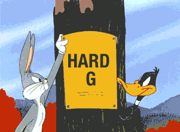
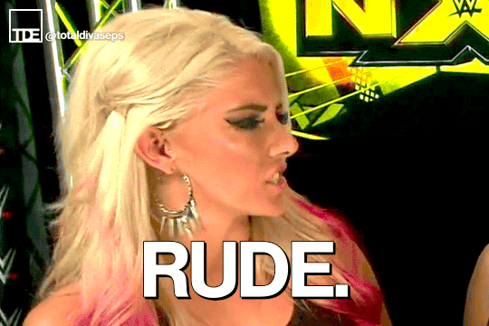
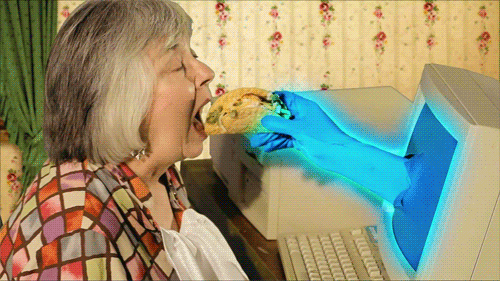
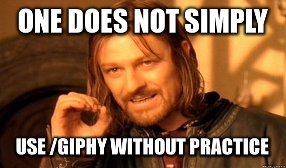

Level Up Your #GIFGame
@cecycorreaWelcome to Jurassic Park
CSS Dev Conf

GIFs are everywhere!
- Texts
- Social Media
- Workplace chat rooms
- News articles
- Recipes!
Totally normal recipes

I want to get something out of the way...
How do you pronounce "GIF"?
JIF is the format, GIF is the culture
Great article by Andy Baio (@waxpancake)!
"Because when we talk about GIFs these days, we’re not really talking about the file format. We’re talking about the art form and culture that surrounds it, and that was created and popularized by the Internet."
☝️ what I believe
Or...
"You believe that the creator’s wishes are largely irrelevant because language evolves, and prescriptive approaches to language are pointless."
Agenda
- Bit of history
- What makes a good GIF
- GIFs in the workplace
- Tools for the job
- GIF OFF! #GIFGame
A short history of the GIF
Arrival of a Train
The Sneeze
The Sprinkler Sprinkled

Of course, cats

What makes a GOOD GIF?
Simple concepts.
They do one thing, and they do it well.
Anger
Rude
Sad
Excitement for the weekend!
Mind blown
Betrayal
What makes a good GIF?
A good GIF perfectly conveys an emotion.
What makes a GREAT GIF?
Provides an element of the unexpected.
A good GIF

A GREAT GIF
A great GIF brings delight to an interaction.
How do you bring this into the workplace?
Simple rules for GIFing in the workplace
#1 If you wouldn't show it to HR, it doesn't belong in Slack.
Remember, this applies to the workplace, but also work adjacent communities.
Example #1
Example #2
Example #3
Example #4
#2 Is this GIF adding or enhancing the conversation?
A good GIF should improve an interaction
#3 Practice safe Giphy
Tools for the people!
Common tools
- Giphy best practices
- GIF Keyboard
DEMO TIME!
Custom workflows
- Dropbox + Alfred
- Github + CLI
Dropbox + Alfred
Combine...
- Dropbox public links
- Alfred workflow to generate a public URL
Public link follows the same pattern
https://dl.dropboxusercontent.com/u/USERID/path/to/file
Use a bash script to generate the link
base_url="https://dl.dropboxusercontent.com/u/USERID/path/to/file"
echo -ne ${base_url}$(basename {query})| pbcopy
DEMO
Free version: Github + CLI
- Host your files on Github
- Use aliases and bash scripts
Hosting on Github
https://raw.githubusercontent.com/USERNAME/REPO/BRANCH/path/to/file
Smart aliasing
alias gif-upload="cd ~/path/to/gifs && git add .
&& git commit -m 'adding some memes' && git push origin master"
From anywhere, I can cd into my GIF directory and upload GIFs to my repo.
Smart aliasing
alias gif-search="~/absolute/path/to/gifs ls | grep"
Allows me to search my GIF collection from anywhere.
Bash scripting
#!/bin/bash
base_url="https://raw.githubusercontent.com/USERNAME/repo/branch/"
base_url+=$1
echo $base_url
Takes a file argument and gives me public Github link.
Note: This assumes the file exists.
DEMO
GIF OFF!
Rules!
- You will be given a prompt
- Tweet using #GIFGame to participate
- Best GIF, as determined by me, wins
Prize: a "you won the internet" certificate to be mailed to you
Pls Vote!
PLS VOTE!
Text:
(504) 229-6828 with #Hashtag, rating (1 - 5), comment (optional).
Sample:
#GIFGame 5 mind blown